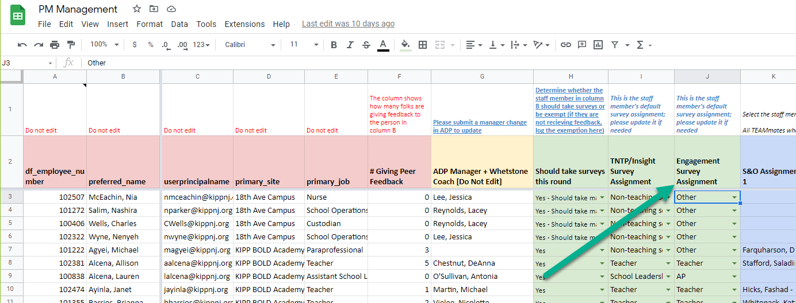
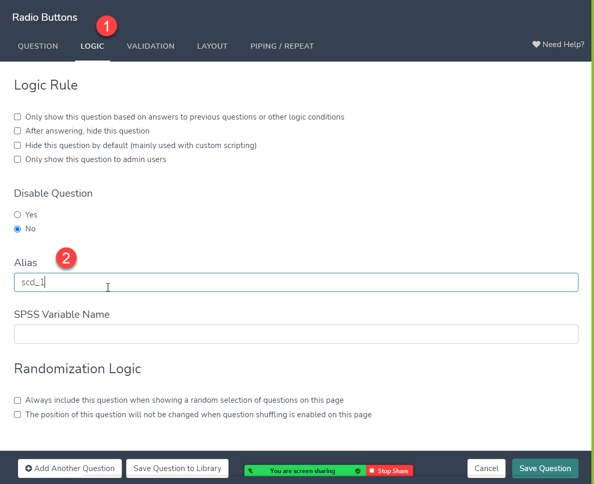
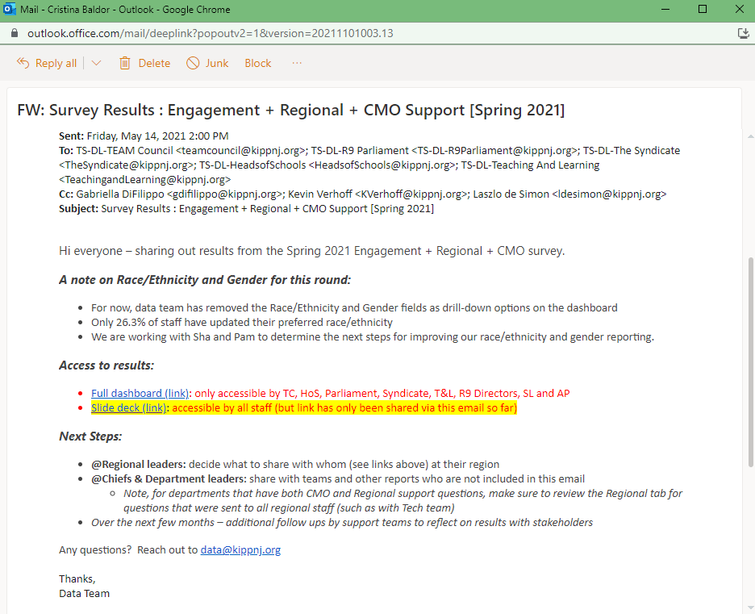

Engagement & Support Survey
Contents
Engagement & Support Survey¶
Background¶
We use this survey to improve organizationally. We ask research-backed questions to measure how engaged our TEAMmates are in their work, questions about how our regions are doing, school culture, and about Room 9/10/11 department performance. Regions and Room 9/10/11 departments use this survey as a key metric for their goals. Our leadership teams uses the reports from this survey to make adjustments and improve.
Set Up¶
Build the roster by running query in SQL and assigning via INDEX-MATCH in PM Management document.
As part of Self & Others survey audit, DSOs can adjust assignments as needed.

Building Questions¶
Create display logic for new pages/questions assign values for responses as needed. Test links as different members of staff (CMO, school-based) to ensure questions display correctly for different groups.

Aliasing question names allows us to change question text in different survey rounds and match to the same one in different versions.

Select skip numbering in the Layout tab.
Survey Campaigns¶
The Engagement & Support Surveys are conducted twice annually. Once as a standalone in December, one with the end of year performance management round.
Follow same procedures as other performanace management survey campaigns. Schedule reminders for Monday, Wednesday, Friday and day prior to survey close.
Refresh Tableau Dashboard¶
Engagement Survey Dashboard.
Edit time period to current, refresh the feed, publish update.
Communication and Analysis¶
Include results in email and slide deck to:
TS-DL-TEAM Council mailto:teamcouncil@kippnj.org; TS-DL-R9 Parliament mailto:TS-DL-R9Parliament@kippnj.org; TS-DL-The Syndicate mailto:TheSyndicate@kippnj.org; TS-DL-HeadsofSchools mailto:HeadsofSchools@kippnj.org; TS-DL-Teaching And Learning mailto:TeachingandLearning@kippnj.org
Slide deck example.
